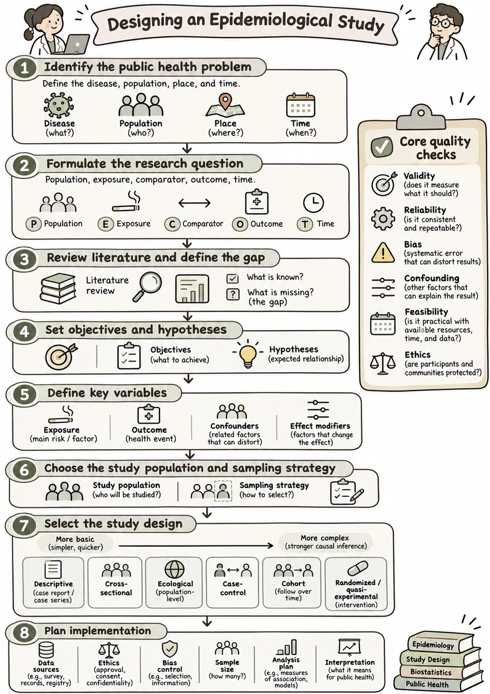
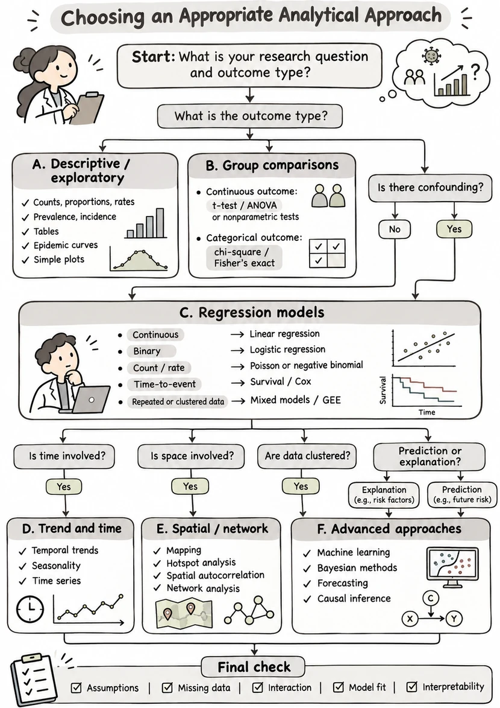

Measure disease
Counts, proportions, risks, prevalence, incidence rates and denominators.
Short, practical introductions to epidemiological thinking and data analysis—for students and early-career researchers. Focused on core concepts, common pitfalls, and transparent workflows.
This is a compact guide, not a replacement for formal training or an exhaustive textbook. Examples are illustrative and use synthetic data. The emphasis is on methods used in disease surveillance, outbreak epidemiology, statistical modeling, and spatial analysis.
Counts, proportions, risks, prevalence, incidence rates and denominators.
Descriptive epidemiology, time trends and geographical variation.
Study design, count models, model assumptions, and interpretation.
Commented R scripts, synthetic datasets, reproducibility and validation.
An adaptable roadmap from the first research question to a defensible and reproducible interpretation.
State a focused research question, study aim, population, setting, time window and outcome. Distinguish descriptive questions from causal and predictive questions.
Select a suitable approach: surveillance or ecological analysis, cross-sectional, cohort, case-control, or intervention study. Specify whether a row represents a person, case, outbreak, herd, location or time period.
Specify case and outbreak definitions, inclusion/exclusion criteria, numerator, denominator and follow-up time. Identify where data come from and how complete or representative they are.
Consider selection bias, misclassification, confounding, missing data, clustering and sample size or precision. For causal questions, draft a simple causal diagram before choosing covariates.
Write an analysis plan covering descriptive statistics, uncertainty intervals, covariates, model assumptions, diagnostic checks and sensitivity analyses. Choose validation appropriate to time, geography and clusters.
Obtain applicable ethics and data-use approvals; retain raw-data provenance; use reproducible scripts; interpret association versus causation carefully; and report methods, limitations and results transparently.
An eight-step overview of study planning. Select the design according to your question, feasibility, ethics and bias—not from a fixed hierarchy.

An observational surveillance study can describe where and when outbreaks occur, but geographical or temporal associations alone do not establish individual-level causes.
Choose the quantity that actually answers your question. Always identify the numerator, denominator, time base and unit of analysis.
| Measure | What it describes | Important distinction |
|---|---|---|
| Outbreak count | Number of outbreak events meeting a defined rule. | One outbreak may include many cases. Counts do not account for population size. |
| Case count | Number of reported people or animals meeting the defined case criteria. | State whether the count covers all reported cases or only cases linked to reported outbreaks; distinguish individuals from repeated events. |
| Prevalence | Existing disease within a defined population, either at a specific point in time or over a stated period. | Point and period prevalence use different observation windows; define the population and time period before calculation. |
| Cumulative incidence (risk) | Proportion initially at risk who develop disease over a specified interval. | Requires a defined population at risk and follow-up interval. |
| Incidence rate | New cases divided by total time at risk. | Expressed per person-time or animal-time. |
| Outbreak reporting frequency | Reported outbreaks per population-time, if the denominator is defensible. | Label explicitly; it is not an individual infection incidence rate. |
The R teaching example uses reported cases associated with fictional outbreaks, not every infection in a population. For surveillance series, population-years can approximate person-time only under stated assumptions, and it is not the observed time each person was at risk. Reporting completeness, surveillance definitions and detection practices can also change; an outbreak-event reporting frequency is not individual disease incidence.
These are concise starting points—not recipes that automatically apply to every dataset.
Line graphs, smoothing, trend tests and regression for changing disease patterns. Check seasonality, temporal dependence and reporting changes before interpretation.
Rates and maps, global/local spatial autocorrelation and local smoothing. Define geographical units and neighborhood relationships; assess unstable estimates and multiple testing.
Use Poisson or negative-binomial models for appropriate counts with exposure offsets; consider clustered-data methods and evaluate overdispersion and residuals.
Random Forest and gradient boosting can support prediction. Prevent data leakage, use suitable validation, and distinguish model importance from causal effects.
Match the analysis to the question, outcome, data structure and assumptions. Consider temporal, spatial and clustered dependence before interpreting a model.

Each educational example should explain the question, required data, code comments, interpretation, assumptions and references. Start with an original R example comparing reported outbreak counts, case counts and normalized frequencies using entirely synthetic data.
The downloadable script is a synthetic-data teaching example, not a validated surveillance pipeline. The figures illustrate choices rather than prescribe analyses. Additional tutorials will follow testing and review.
# Example data are created in the full R script.
# Reported case events linked to outbreaks:
example$case_frequency_100k <- (
example$cases / example$population_years
) * 100000
# These are reported event frequencies,
# not necessarily individual incidence.
# Download the full script to run it.This learning page is newly written. It draws on standard epidemiological principles and cites methodological sources; it does not reproduce textbook chapters, tables, figures, or supplied datasets.
Dohoo I, Martin W, Stryhn H. Veterinary Epidemiologic Research. 2nd ed. VER Inc.; 2009. See especially Chapters 4, 7–9, 18, 25–27, 29 and 30.
Library bibliographic record ↗Official book and chapter website ↗STROBE provides reporting checklists for cohort, case-control and cross-sectional studies. Reporting checklists are not substitutes for sound study design.
STROBE checklists ↗The RECORD extension offers additional reporting considerations for observational studies using routinely collected records.
RECORD statement ↗These original educational summaries are not official textbook companion materials. The linked textbook remains the work of its authors and publisher; no book PDFs, textbook figures, or supplied teaching datasets are redistributed here. The two infographics are simplified visual learning aids; consult methodological literature and a study-specific analysis plan before selecting methods. Examples use fictional, synthetic data and require checking and adaptation before research use.